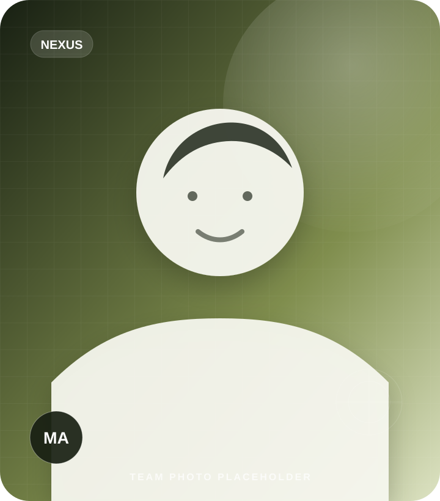
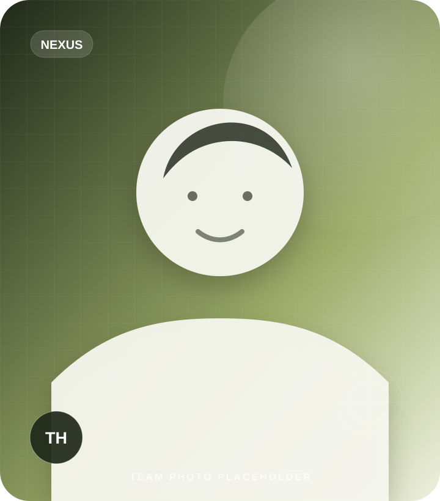
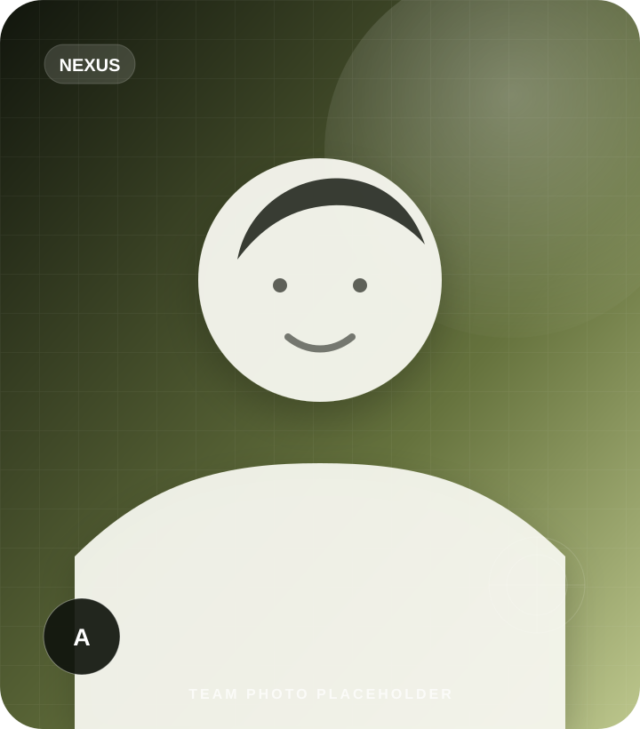
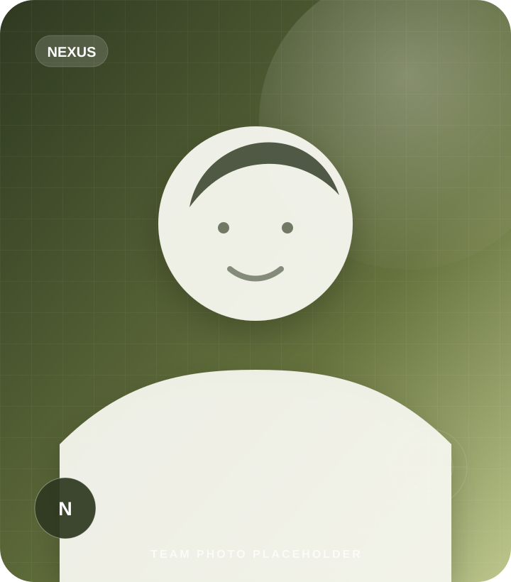

Leadership
LeadershipTanvir
Founder & Chief Executive Officer
Company oversight, finance, client relationships and cross-functional security and recovery leadership.
Each person has a dedicated profile card with their role, functional department and social-link area, making the team page easier to understand and update.
Nexus coordinates client work as one company while assigning technical decisions to the people closest to the relevant security, recovery, intelligence or automation discipline.
Clients do not need to coordinate separate specialists or repeat the same context across departments.
Relevant leads and practitioners contribute wherever their subject knowledge is required.
Client communication stays tied to clear decisions, progress, risks and next actions.
The current images and social URLs are branded placeholders. Replace them with approved team photographs and verified profile links before publishing.
LeadershipFounder & Chief Executive Officer
Company oversight, finance, client relationships and cross-functional security and recovery leadership.
VAPT Lead
Leads authorized vulnerability assessment and penetration-testing engagements.
 VAPT
VAPTPenetration Testing Specialist
Supports security testing, evidence collection and remediation-oriented reporting.
 VAPT
VAPTJavaScript & API Security Specialist
Focuses on JavaScript-heavy applications, APIs and modern application attack surfaces.
 VAPT
VAPTSecurity Testing Specialist
Contributes to scoped testing, verification and technical findings documentation.

VAPTSecurity Testing Specialist
Supports repeatable testing workflows and evidence-based security reporting.

RecoveryWordPress Malware Recovery Specialist
Investigates malicious files, persistence mechanisms and recovery requirements.
 Recovery
RecoveryRecovery Specialist & Web Developer
Combines WordPress recovery work with web-development support for safer restoration.

RecoveryRecovery Operations Specialist
Supports cleanup operations, verification and post-incident recovery workflows.
 OSINT
OSINTOSINT & IT Support Lead
Leads authorized exposure research and coordinates software and hardware support.
OSINT Analyst & Finance Support
Supports public-source research, documentation and internal finance coordination.

OSINTOSINT Analyst & Finance Support
Contributes to exposure research, structured findings and finance support.
 OSINT
OSINTIT Support Specialist
Supports technical troubleshooting, systems coordination and operational continuity.
 AI
AIAI, Data & Automation Lead
Leads secure automation, data workflows and n8n-centered implementation planning.
 AI
AIAI & n8n Automation Specialist
Builds and supports AI workflows, integrations and business automation systems.
 Client Success
Client SuccessClient Relationship Manager
Coordinates client communication, expectations, progress updates and next actions.
Evidence and context are documented so specialists can contribute without losing the original problem definition.
Complex cases can be reviewed across security, development, intelligence and automation perspectives.
Communication is translated into clear decisions, risks and next actions instead of fragmented technical messages.
Sensitive information is discussed only with people who need it for the authorized work.
Updates distinguish confirmed evidence, informed assessment and unresolved uncertainty.
Tasks, findings, decisions and handoffs remain visible throughout an engagement.